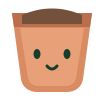
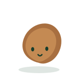
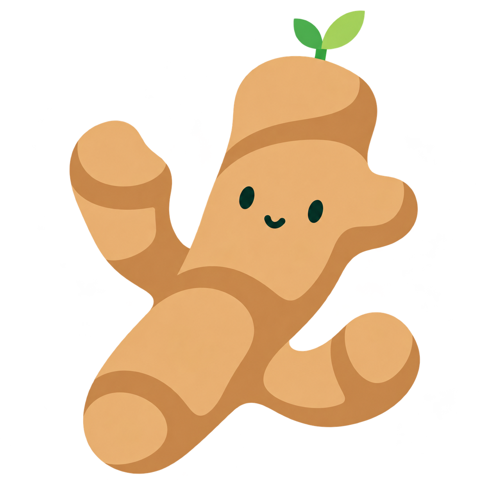
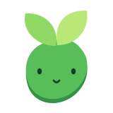
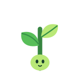
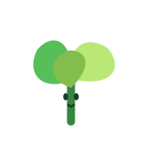
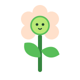

Mascotas por libro
- 01

Maceta
Flowerpot
ESTodo crecimiento parte de un buen suelo
ENSoil is the foundation of your growth
- 02

Semilla
Seed
ESYa has plantado la semilla, ahora a regarla cada día
ENRead: plant a seed.
- 03

Raíz
Root
ESUna semilla es una idea que echa raíces con el tiempo
ENSeeds need time to root your future growth
- 04

Brote
Sprout
ES¡Algo asoma por fin! Las ideas empiezan a cuajar
ENSomething is finally sprouting! Ideas are taking shape
- 05
Plántula
Seedling
ESLas hojas verdes son el siguiente paso del crecimiento
ENGreen leaves are the next step in growth
- 06
Retoño
Sapling
ESHoja a hoja, el conocimiento se va asentando
ENLeaf by leaf, knowledge begins to live
- 07

Tallo
Stem
- 08

Planta
Plant
- 09

Flor
Flower
- 10
Fruto
Fruit
- 11
Siempreverde
Evergreen
ESVuelve en el futuro a ideas pasadas. Déjalas crecer.
ENAlways return to a past idea. Let it grow in the meantime